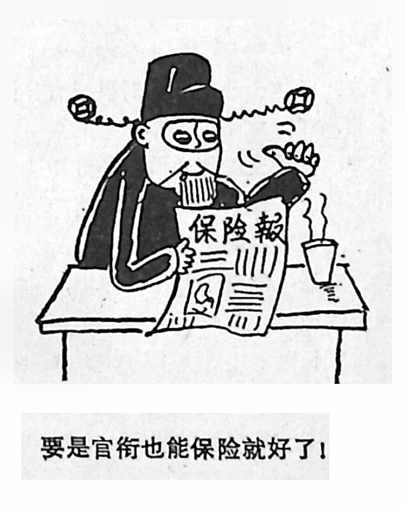

佚名 《人事》1986年第7期（总第10期），第29页
要是官衔也能保险就好了！
If Only Official Rank Could Be Insured Too!
- Text in the drawing
- 保险报
Insurance news - Description
- A traditional official in a winged hat reads a newspaper headed 保险报 (insurance news).
- Artist
- Unattributed 佚名
- Published in
- 《人事》1986年第7期（总第10期）, p. 29
- Themes
- Privilege · Seniority

Cite
Unattributed, “要是官衔也能保险就好了！” [If Only Official Rank Could Be Insured Too!], Renshi (Personnel) 《人事》, 1986, no. 7, p. 29.